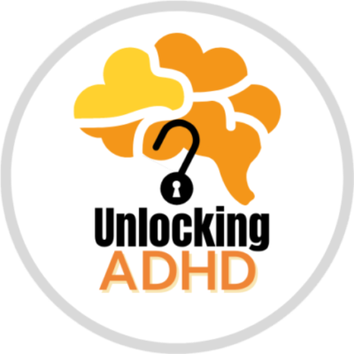
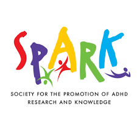

Seek Help

Unlocking ADHD Support
They provide practical information and resouces to assist people with ADHD and their families.

SPARK
SPARK is a non-profit organisation that provides support to children and youth with special needs and their families.

Samaritans of Singapore (SOS)
Samaritans of Singapore (SOS) is dedicated to providing confidential emotional support to individuals facing a crisis
Institute of Mental Health
IMH has counsellors who are trained to help people with ADHD and their families.
Ways to take care of people with ADHD
The most important part of understanding someone with ADHD is educating yourself about what the condition means. It’s often so much more than just a lack of focus or hyperactivity. With 3 different types of ADHD, it’s essential to learn more about the ADHD symptoms a friend or loved one may experience. Educating yourself can initially mean going to a loved one’s doctor’s appointment and asking questions.
One of the hardest things about a new ADHD diagnosis is not knowing where or how to find help. Unfortunately, some people with ADHD get overwhelmed when they receive a lot of information without a clear path forward. So, knowing how to help someone with ADHD find a course or resource for treatment can be invaluable.
Often, a combination of therapy and medication is used to treat ADHD. A psychiatrist or medical doctor can diagnose ADHD and prescribe stimulant medication. Therapists and psychologists can help your loved one cope, set routines, discover and implement strategies, and learn social skills.
Often, a combination of therapy and medication is used to treat ADHD. A psychiatrist or medical doctor can diagnose ADHD and prescribe stimulant medication. Therapists and psychologists can help your loved one cope, set routines, discover and implement strategies, and learn social skills.
When you’re wondering how to support someone with ADHD, it’s critical to understand how important simply listening and communicating is. It may sound too easy, but it’s an incredibly effective way to lend support.
For example, your friend or spouse may tell you that they’re too overwhelmed to clean the kitchen or put laundry away. They also might not put this into words, but rather, just avoid the task or take a very long time to complete it.
While their words or behavior might just seem like an excuse, ADHD can be so debilitating for some people that seemingly simple tasks feel daunting. Understanding this ADHD symptom can change how you react. Instead of frustration, anger, or resentment, you can come from a place of compassion and understanding.
For example, your friend or spouse may tell you that they’re too overwhelmed to clean the kitchen or put laundry away. They also might not put this into words, but rather, just avoid the task or take a very long time to complete it.
While their words or behavior might just seem like an excuse, ADHD can be so debilitating for some people that seemingly simple tasks feel daunting. Understanding this ADHD symptom can change how you react. Instead of frustration, anger, or resentment, you can come from a place of compassion and understanding.
While it’s important to listen to your loved ones about their concerns, it’s equally crucial to be comfortable learning to talk to them about your concerns, too. It’s best to address issues as they happen (or soon after), so your list of grievances doesn’t become unmanageable, causing anger or resentment.
Most people with ADHD are acutely aware of their weaknesses because teachers, friends, and family members have shared their frustrations about them for years. Constantly hearing about their faults can be one of the reasons many people with ADHD suffer from low self-esteem. Focusing on strengths is essential in helping build up, not beat down, self-confidence.
One of the best ways you can learn how to talk to someone with ADHD is by noting their strengths and complimenting them. There’s something to be said about catching people doing something right.
One of the best ways you can learn how to talk to someone with ADHD is by noting their strengths and complimenting them. There’s something to be said about catching people doing something right.
People with ADHD can really thrive with a routine (and suffer without one!). It’s also common for them to struggle with sudden changes. While real life isn’t always set in stone, and unforeseen changes will happen from time to time, developing a general pattern can help relieve some of their anxiety about the unknown.
As any caregiver will tell you, you can’t take care of anyone else if you aren’t taking good care of yourself. Living with a loved one, or maintaining a relationship with someone who has ADHD, can be highly stressful, even after starting a treatment plan, including ADHD medication or therapy. It’s completely human and normal to be stressed and overwhelmed.